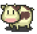
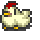
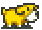
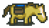
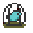

-Animais & Animais Selvagens- |
||
Neste jogo há quatro animais que você pode cuidar na sua fazenda. Existem também outras criaturas no mundo de Harvest Moon. |
| Vacas | |
Custo: 5000G cada Lucro: 150G para leite de tamanho pequeno, 250G para leite médio, 350G para leite grande Cuidar: Sua vaca pode comer dois itens diferentes. Um é a forragem que você pode cortar da grama nos seus campos(Menos caro). O outro é comprar ração de vaca, mas pode custar muito caro! Sai por 700 Gold por apenas dez refeições. Para acarinhar sua vaca você simplesmente precisa de uma escova, alimenta-la e tirar seu leite todo dia. Só vacas adultas podem tirar leite. Quanto mais acarinhar sua vaca, ela ficará mais feliz e ela lhe dará um leite de melhor qualidade. Em dias de sol(Não em dias de chuva ou neve) coloque suas vacas para fora. Certifique-se de ter um grande campo de grama com uma cerca ao redor dela(Usando madeiras ou pedras). O campo de grama precisa estar completamente bem crescido. |
 |
| Galinhas | |
Custo: 1000G cada Lucro: 50G por ovo Cuidar: Sua galinha come dois itens diferentess. Um é a forragem que você pode cortar da grama em seus campos(Menos caro).O outro é comprar ração de galinha, mas pode custar muito caro! Sai por 500 Gold por 10 refeições. Certifique-se de alimentar sua galinha todos os dias. Se você esquecer um dia sua galinha não colocará ovos por 3 dias até você voltar a alimenta-las. É melhor comprar sua primeira galinha, e então colocar os seus ovos na incubadora. Levará 6 dias para o pintinho chocar do ovo. Daqui em diante levará uma semana antes dele estar completamente crescido e botar ovos. |
 |
| Cachorro | |
Custo: De graça Lucro: Nenhum Cuidar: Certifique-se de levar seu cachorro em dias de chuva e neve, mas deixe ele do lado de fora em dias de sol ou noites claras.Ellen trará pra você seu cachorro com o nome de Koro no segundo dia de manhã. Você pode escolher outro nome para o cachorro. O cachorro é usado para assustar toupeiras que saem do chão e espanta cachorros selvagens pra impedir que quebrem sua cerca durante a noite. |
 |
| Cavalo | |
Custo: De graça Lucro: Nenhum Cuidar: Certifique-se de falar e escovar seu cavalo todo dia. Você não tem que se preocupar em alimenta-lo. Uma vez que seu cavalo cresce você estará apto a comprar a Sela. Então você pode subir nele a correr pela sua fazenda em grande estilo. A sela é usada para entregar sua colheita. Leve ele até o campo onde está a colheita e coloque-as na bolsa e elas automaticamente serão entregues. |
 |
Os outros animais que você encontra estão envolvidos com eventos, ou são apenas para apelo visual do game.
| Borboleta |
Insetinhos que voam por ai durante as estações de primavera e verão. Deixe eles pra lá! |
| Sapo |
Estas criaturas saltarão quando você corta a grama na sua fazenda. |
| Toupeiras |
A toupeira aparecerá quando você for plantar sementes. Coloque seu cachorro perto para assusta-las. |
| P-Chan | |
Este é o animal de estimação de Ellen que fica na sala de trás do restaurante. Você pode escutar ele cantar se você falar com ele. Este pássaro aparecerá quando chegar a hora de um evento com Ellen. |
 |
| Coelho |
No inverno, você verá o avô de Eve(Caçador) com um coelho. Você pode libertar o coelho dizendo que vai pagar 1000 Gold por ele(Você não vai perder dinheiro). O caçador dirá que você tem um bom coração e deixa o coelho livre. |
| Esquilos |
Frequetemente você vai ver eles correndo pela montanha. Deixa eles pra lá! |
| Cães Selvagens |
Estas criaturas nunca são vistas mas eles podem perturbar seus animais durante a noite. Eles assustarão suas vacas ou vão comer suas galinhas se você deixa-las do lado de fora a noite. Eles também quebrarão suas cercas ao menos que seu cachorro esteja fora para assusta-los. |